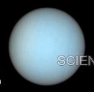

Uranus
Uranus rotates on its side, making it unique.
| Distance from Sun | 2.87 billion km |
|---|---|
| Orbital Period | 84 years |
| Moons | 27 |
| Atmosphere | Hydrogen, Methane |
Uranus has an axial tilt of about 98°.
A Digital Encyclopedia of Our Solar System
Uranus rotates on its side, making it unique.
| Distance from Sun | 2.87 billion km |
|---|---|
| Orbital Period | 84 years |
| Moons | 27 |
| Atmosphere | Hydrogen, Methane |
Uranus has an axial tilt of about 98°.